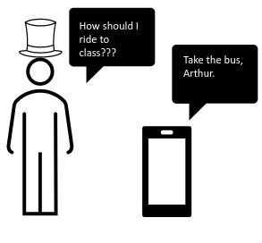
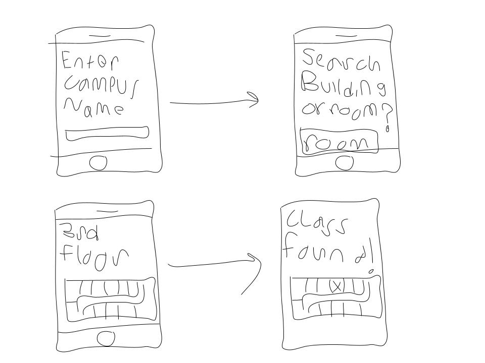

Problem Statement: Class Finder

Many students struggle on a semesterly basis to sucessfully locate thier classes resulting in tardiness and a content absorption disadvantage. Not only is locating the building in which the class is in a challenge, but finding the classroom itself is often a problem disregarded.
Problem Statement PDFAffinity Diagram: Class Finder

After careful consideration of what our application might need in regards to features, we derived several methods of conveinience from existing apps with the intention of integrating them all in one place.
Problem Statement PDFAffinity Diagram: Class Finder
This assignment instructed us to create fictional users of our application. Each persona covers a different demographic of who we believe would be the best fit for utilizing the app to its fullest extent. We include demographics such as young students, older students, instructors, and visitors.
Persona PDFClass Finder StoryBoard
This storyboard goes over how one of the key features of our applciation might be utilized. It demonstrates a situation in which the "Most Efficient Travel" feature, which tells the user the most cost and energy efficeint way to travel, might be used.
StoryBoard PDFClass Finder Sketches
A crudely drawn sketch of one of the features of the ClassFinder application. It reviews how the GUI would look while the app is in use.
Sketches PDFClass Finder Paper Prototype
Crudley drawn arrangements of each screen the ClassFinder user could come accross, with a special attention paid to the settings portion of the app.
Prototype Video